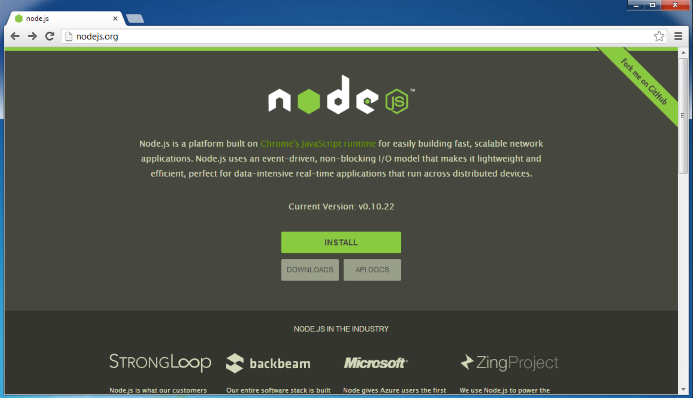
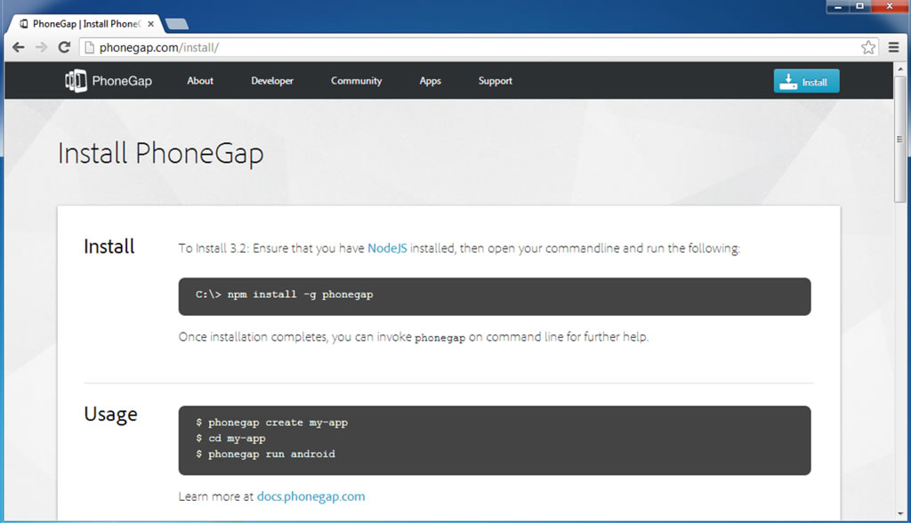
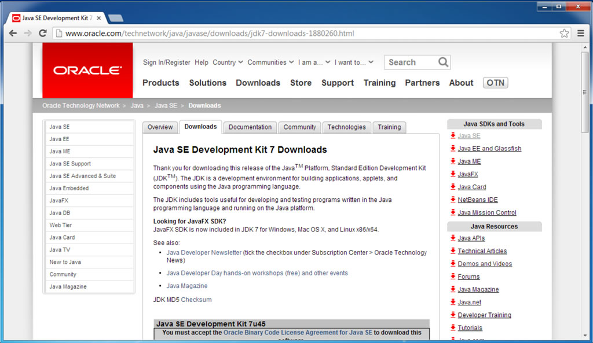
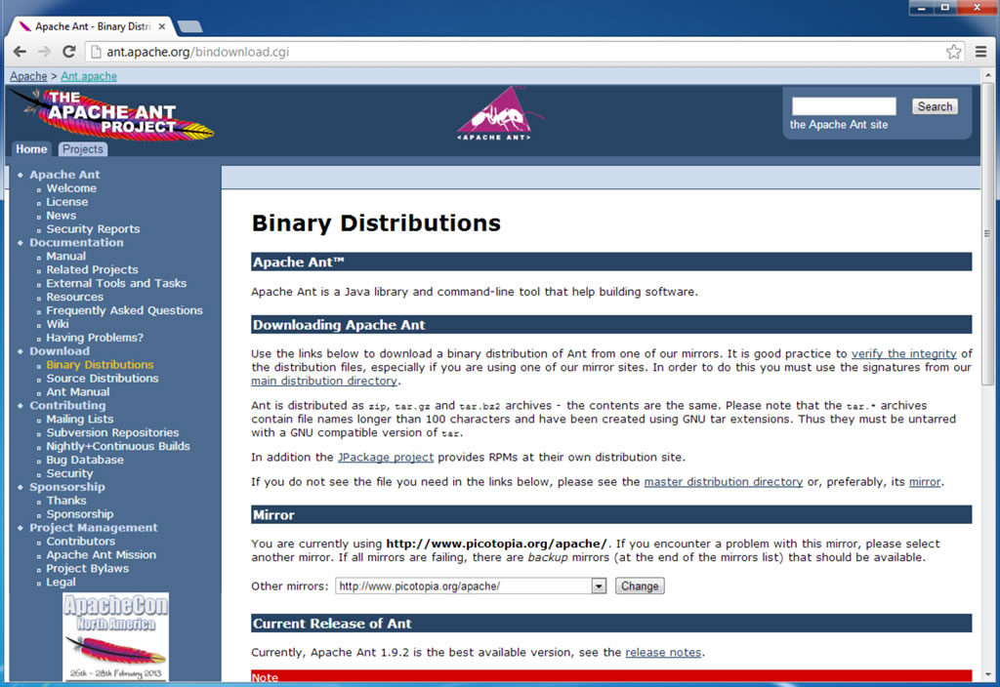
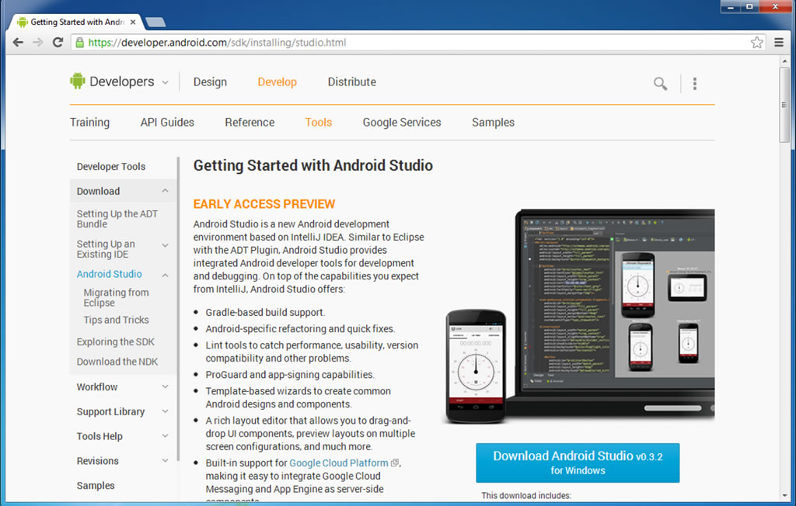
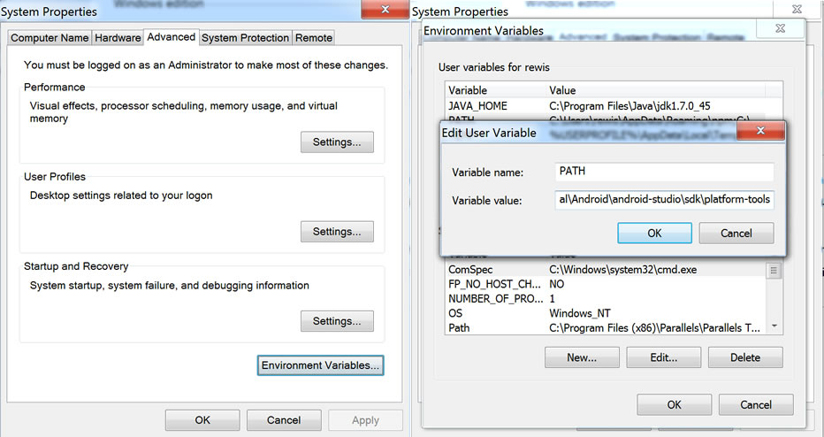

PhoneGap Installation Instructions for Android
Please complete the following steps to ensure that you have everything installed that you will need in order to build for Android using Phone.
-
Download and Install NodeJS

- Go to the NodeJS site and click on the "Install" button, which will download the NodeJS installer.
- Launch the installer and follow the steps to install NodeJS.
-
Install PhoneGap

- You must complete the installation of NodeJS before proceeding.
- Mac: Open the Terminal application and type the following command
sudo npm install -g phonegap
- Win: Open the Command Prompt application and type the following command
npm install -g phonegap
- Close the Terminal/Command Prompt
-
Install Java

- Go to the Oracle site and download the Java SDK for your platform.
- Launch the installer and follow the steps to install.
-
Install Ant

- Open the Terminal/Command Prompt application
- Type
ant
and hit Return.
- If you see the following, ant is installed - even though that message definitely doesn't sound like it!
Buildfile: build.xml does not exist! Build failed
- If you are told that Ant is an unrecognized command, you will need to download and install Ant.
'ant' is not recognized as an internal or external command, operable program or batch file.
- Go to the Apache Ant site and download the Ant binary.
- Unzip the downloaded file and move the folder to a location of your choice. Just remember where you put it, because you will need to add the path to it to your system paths.
-
Install Android Studio

- Go to the Android Developer site and download Android Studio.
- Launch the installer and follow the steps to install.
-
Update Your Path Variables

Windows
- Click on the Start menu then right-click on Computer, then click Properties.
- Click Advanced System Settings in the column on the left.
- In the dialog box, click Environment Variables.
- Select the PATH variable in the upper section of the window and press Edit.
- Append the following to the PATH based on where you installed the SDK, for example:
C:\Users\YOURUSERNAME\AppData\Local\Android\android-studio\sdk\tools;C:\Users\YOURUSERNAME\AppData\Local\Android\android-studio\sdk\platform-tools
Note: The path to Android Studio appears twice in the string (once to point to …\platform-tools and once to point to …\tools), and you need to add both occurences!
-
If you needed to install Ant:
- Append the location of the Ant folder to the PATH variable:
C:\Users\YOURUSERNAME\AppData\Local\apache-ant-1.9.2\bin
Note: the path includes the "bin" folder
- Click OK to save the updated PATH variables.
- Click New to add a new User variable.
- Give the new variable a name of ANT_HOME.
- Enter the path to the Ant folder as the value for the ANT_HOME variable:
C:\Users\YOURUSERNAME\AppData\Local\apache-ant-1.9.2
Click OK.
- Click New to add a new User variable.
- Give the new variable a name of JAVA_HOME.
- Enter the path to the Java JDK that you installed as the value for the JAVA_HOME variable. It is probably located at:
C:\Program Files\Java\jdk1.7.0_45
Click OK.
- Save and Close the dialog box.
Mac OSX
- Open or create ~/.bash_profile in a text editor.
- Note: The filename begins with a period. This makes the file a hidden file. To open a hidden file, you will need to use an app that can do this, such as TextWrangler, or follow the instructions here.
- Add the following line:
export PATH=${PATH}:"/Applications/Android Studio.app/sdk/tools":"/Applications/Android Studio.app/sdk/platform-tools"
Update the path to Android Studio as necessary if you did not install it in /Applications
-
Test PhoneGap
- Open the Terminal/Command Prompt. Note: After you modify your PATH, you should quit and relaunch the Terminal/Command Prompt application to ensure that it gets the updated path variables.
- Enter the following (responses have been omitted):
cd /Users/YOURUSERNAME/Desktop
phonegap create MyApp com.test.myapp MyApp
cd MyApp
phonegap local build android
- If everything is installed correctly, you should see the following in the Terminal/Command Prompt:
[phonegap] adding the Android platform...
[phonegap] compiling Android...
[phonegap] successfully compiled Android app
Congratulations! Your laptop is ready to build Android applications using PhoneGap.